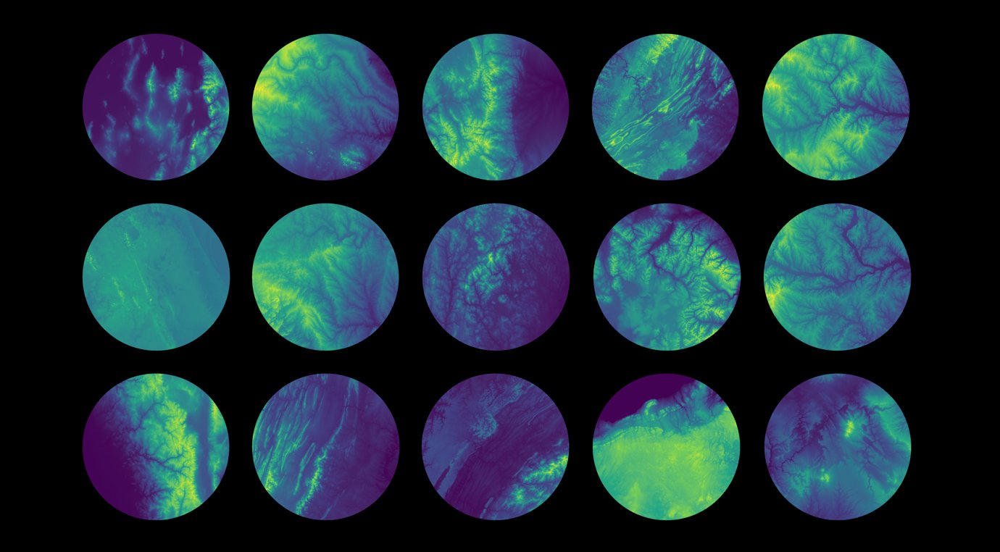
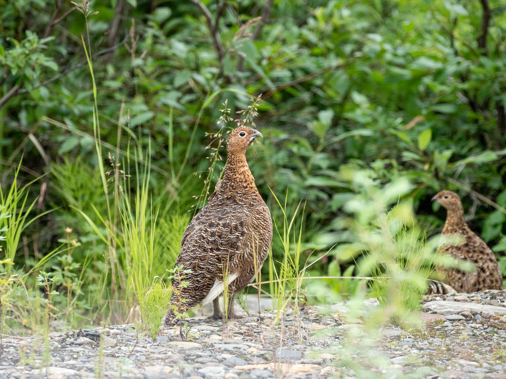
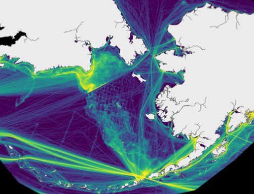
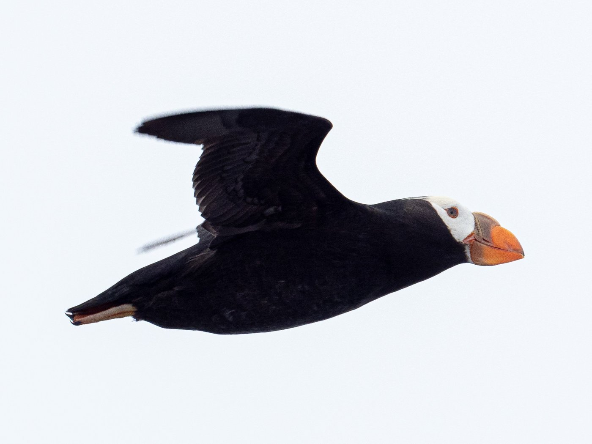
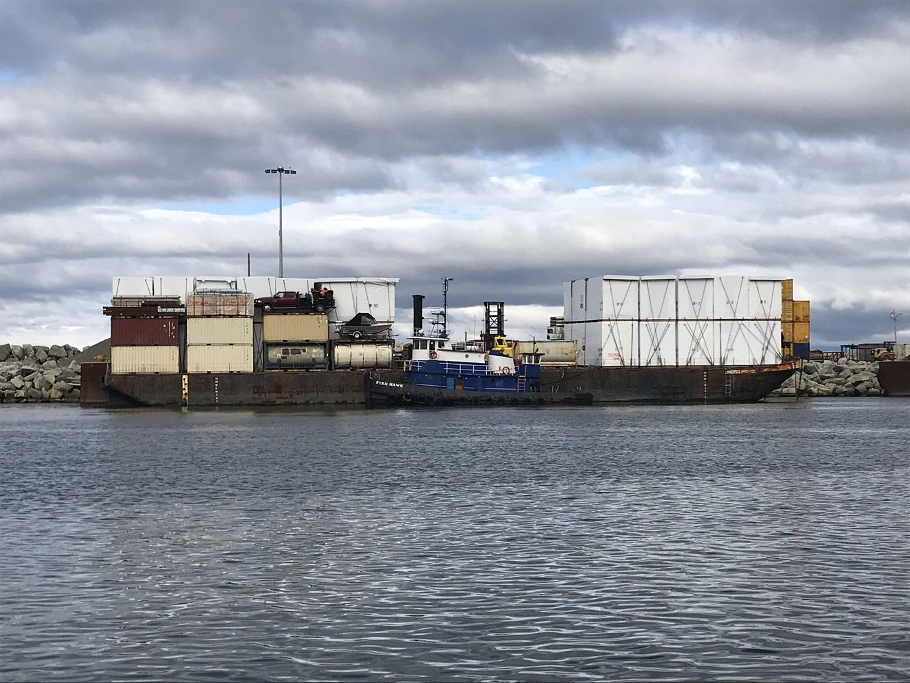
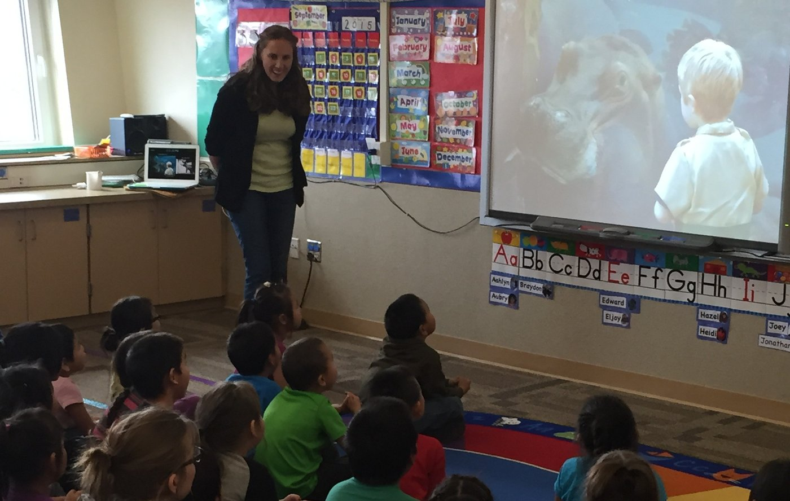

Research
Research
I work on applied conservation problems that are limited by data — where the question is answerable, but only if someone assembles, cleans, and analyzes information at a scale that hasn’t been attempted yet.
Current projects
Active work
Multi-scale environmental geodiversity for NEON
Environmental heterogeneity — the roughness of terrain, the variety of soils, the swing of the climate — shapes where species can live. But the scale at which you measure that heterogeneity changes the answer, and most analyses pick one scale and hope.
I built a set of geodiversity and climate layers for every National Ecological Observatory Network site in the United States, calculated across multiple spatial scales, together with an adaptable workflow that lets other researchers generate the same layers for any area of interest. The data are published and versioned through the Environmental Data Initiative; the workflow is on GitHub.
Why it matters for practitioners: the same pipeline that serves NEON researchers can characterize environmental heterogeneity for a mitigation site, a proposed reserve, or a regional planning footprint.
Role: Lead author and analyst. Collaborators: Zarnetske Lab (MSU), Baiser (UF), Record (Penn State), Strecker (PSU), Bills, Kounta.

Avian MetaNetwork
Lack of knowledge of species interactions (also known as the “Eltonian shortfall”) inhibits ecologists’ ability to predict the distribution of species. The Avian MetaNetwork helps to fill this gap through the systematic collection and integration of bird-bird interaction data for bird species across the Western Hemisphere.
Role: Data scientist responsible for co-developing and maintaining reproducible workflow for data cleaning, taxonomic harmonization, subsetting, and archiving.
Data paper pre-print (Zarnetske et al.) Archived dataset (to be made public upon release of data paper) GitHub repository


Solar radiation modification
Stratospheric aerosol injection (SAI) is a controversial form of solar geo-engineering that has been proposed as an intermediate step to lower temperatures while global communities work to reduce carbon emissions. However, very little is known about the possibly substantial ecological consequences of SAI. Aerosol injection could affect patterns of light (e.g., diffuse vs. direct) and precipitation, among other variables that are important for ecosystem functioning. This project seeks to better undersatnd the potential impacts and cascading consequences of SAI on ecosystems through experiments, identification of ecological analog communities, and forecasts of extreme events under SAI.
Selected past work
Completed projects

Seabird–vessel risk across Alaska’s oceans
A multi-scale, seasonal analysis combining at-sea seabird survey data with satellite vessel tracking to identify where and when ships and seabirds overlap across Alaska’s marine regions. Produced as a peer-reviewed paper and as a technical appendix for the Bureau of Ocean Energy Management — a direct input to offshore planning and spill-response prioritization.
With Benjamin Sullender (Audubon Alaska) and Kathy Kuletz (USFWS).

North Pacific & Arctic marine traffic dataset
A spatially explicit, publicly available dataset of monthly shipping intensity across the North Pacific and Arctic, 2015–2020, built from raw satellite AIS and released with full documentation at multiple resolutions. Downloaded and reused by agencies, NGOs, and researchers who previously had no consistent regional traffic layer to work from.

Saint Louis Zoo Arctic WildCare Program
A decade as a research associate with the Zoo’s Arctic Socio-Environmental Initiative, working on community engagement in conservation with Alaskan partners. This is where my research questions come from: sustained relationships with the people who live with the outcomes, and a habit of asking what a community actually needs to know before designing the study.